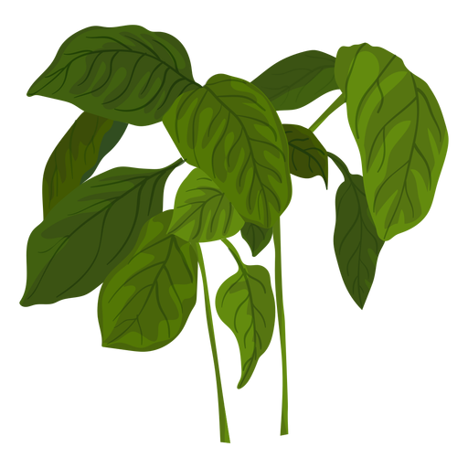

Investigating the Effect of Coconut Milk on the Growth Height and Number of Stems of Ocimum basilicum Plants
Ayden Pinto | Mr. Craig Queenan
Background
This experiment investigates the impact of coconut milk on the growth of Ocimum basilicum (basil) plants. Prior studies have shown that organic fertilizers, including coconut oil, improve soil fertility and plant development. .
The effect of coconut milk on basil growth, specifically in terms of height and stem count, remains unexplored.
Rationale
While organic fertilizers like coconut oil are known to boost plant development, the effects of coconut milk are less understood.
By testing various concentrations of coconut milk and water, the study aims to identify the optimal amount that maximizes growth. The findings could offer valuable insights into sustainable and eco-friendly farming practices.

Conclusions
The results of this study indicate that coconut milk inhibits the growth height, stem count, and biomass of Ocimum basilicum plants, refuting the original hypothesis.
Higher concentrations of coconut milk negatively impacted plant growth, suggesting that it is not a beneficial additive for basil cultivation under the tested conditions.
Future
Future studies should explore lower concentrations of coconut milk, such as 10%, to determine if more moderate levels can promote plant growth
Extending the experiment's duration, increasing sample size, and testing other coconut byproducts like coconut water or oil could provide more comprehensive results.